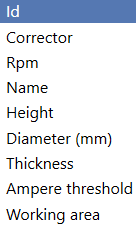
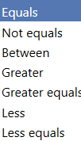

Questa pagina del MES permette di consultare e modificare gli strumenti usati dalle macchine.

PULSANTI
 | UTENSILI |
 | ESTRAZIONI |
 | ENUMERAZIONI |
UTENSILI
Questa sezione mostra i dati degli strumenti associati alla macchina selezionata.

PULSANTI
Questi pulsanti permettono di filtrare la ricerca degli utensili in base a condizioni specifiche.
 | CARATTERISTICHE Seleziona la caratteristica da usare per il filtro, ad esempio ID, correttore, RPM, nome, altezza, diametro, spessore, soglia di corrente o area di lavoro. |
 | CONDIZIONI |
 | FILTRI |
RIMOZIONE FILTRI |
ESTRAZIONI
Questa sezione permette di estrarre dal server i dati gestiti dal MES.

PULSANTI
 | RUN |
CONFERMA | |
 | CANCELLA |
ESTRAZIONE AVVENUTA
Al termine dell’estrazione, se l’operazione è riuscita, si apre una pagina simile a questa.

Cliccando su More options si apre una scheda in cui è possibile modificare la dimensione del font, il formato del foglio, l’orientamento della pagina e la presenza del logo.